Neutrinos and Cosmology¶
Neutrinos, or rather weak interactions, play a very important role in cosmology.
Baryon Asymmetry in the Univserse¶
Cosmic Neutrino Background¶
In big bang cosmology, neutrinos became independent when the expansion rate which is characterized by 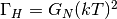 exceeds the rate of weak interaction 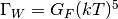.
Rates
The weak interaction cross section is approximately  and neutrino density drops according to 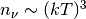. As we can imagine, the weak interaction time scale for neutrinos is given by 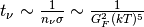. [1]
and neutrino density drops according to 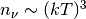. As we can imagine, the weak interaction time scale for neutrinos is given by 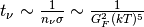. [1]
The neutrinos decouple when we have the rate are comparable, which is
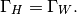
We find the energy scale is MeV while time scale is second. Also notice the decoupling for different flavors should be different.
As a result of expansion, those cosmic background neutrinos should be very cold.
- Number density: 112 neutrinos per cc for each flavor. This 112 includes both neutrinos and antineutrinos.
- Temperature: 1.94K which corresponds to 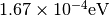.
- de Broglie wavelength: 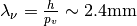 when we assume that 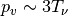.
Interactions¶
Those neutrinos are not really relativistic. Thus we should be careful when dealing with the interactions.
All we need to do is to calculate the scattering and use the fact that refractive index is given by [1]
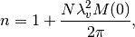
where 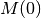 is the forward scattering amplitude.
As an example, the refractive index for 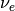 and  are given by [5]
are given by [5]
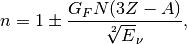
where  is for neutrino and antineutrino respectively,
is for neutrino and antineutrino respectively,  is for target number density,
is for target number density,  is the charge (atomic number) of target and
is the charge (atomic number) of target and  is the mass, 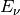 is the neutrino energy. [5] I have an exrtra
is the mass, 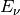 is the neutrino energy. [5] I have an exrtra  .
.
Here is a table of the refractive index for all neutrinos on matter for nonrelativistic neutrinos where I used 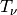 as the kinetic energy of neutrinos.
| Flavor | Refractive Index n | Comment |
| 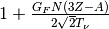 | ||
|
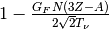 | |
| 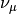 and 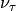 | 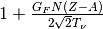 | No charged current |
| 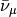 and 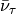 | 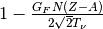 | No charged current |
Detection¶
Since the Earth is moving in the CNB, it has been suggested that we detect the dipole moment of CNB. Neutrinos ahead of the moving velocity will go cross an object on the Earth then generate a tiny force on the object. We might try to detect the force and compare it with the theoretical prediction, even though it is very hard.
Direct detection experiments using this principle have been proposed to detect CNB [2] [3] [4]. However these proposals are without the reach of current technology. [1]
A Possible Application of LIGO¶
Speed with respect to the CMB
The earth is moving through the CMB background at a speed of 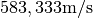.
In the paper by Vogel [1], the force by these CNB on a sphere of radius
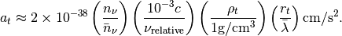
For an approximation, I use 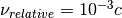, a proper set up of the experiment would be about the order of 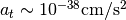.
Refs & Notes¶
| [1] | (1, 2, 3, 4) Vogel, P. (2015). How difficult it would be to detect cosmic neutrino background? (Vol. 025001, p. 140003). doi:10.1063/1.4915587 . |
| [2] |
|
| [3] |
|
| [4] |
|
| [5] | (1, 2) Lewis, R. R. (1980). Coherent detector for low-energy neutrinos. Physical Review D, 21(3), 663–668. doi:10.1103/PhysRevD.21.663. |